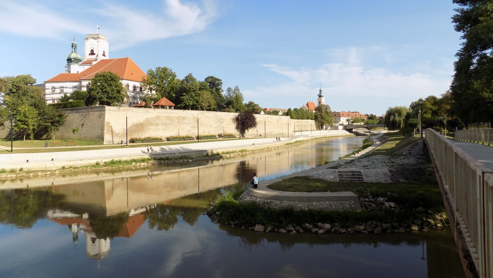
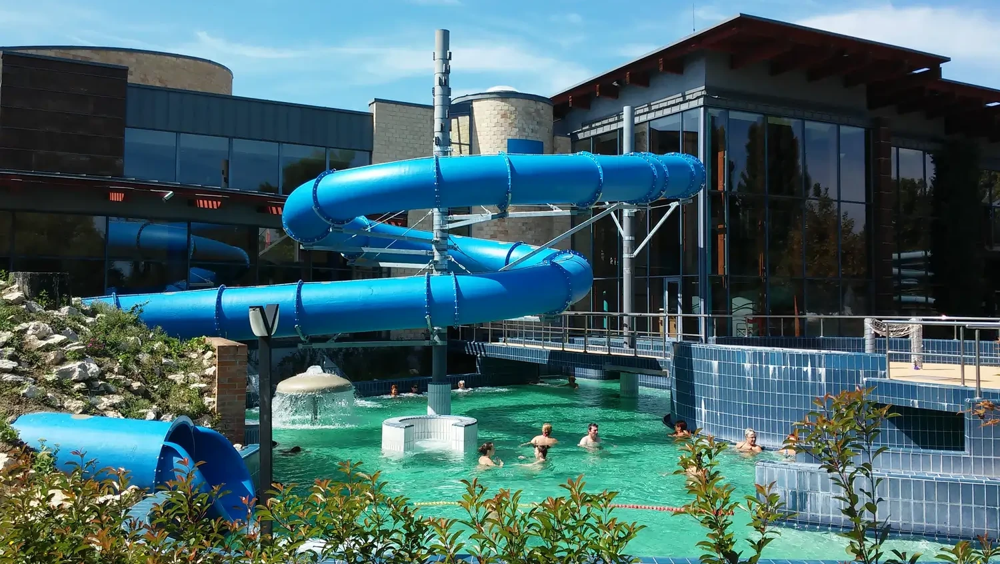
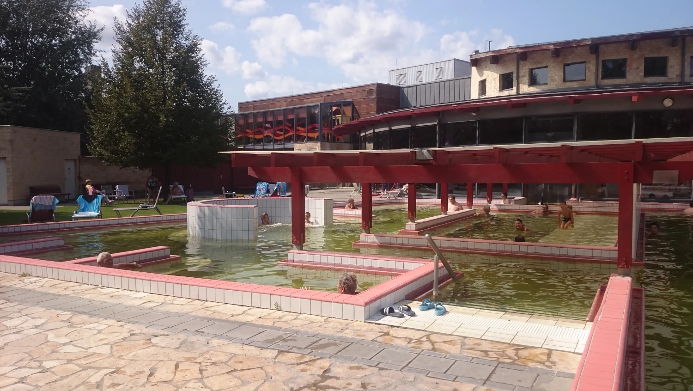
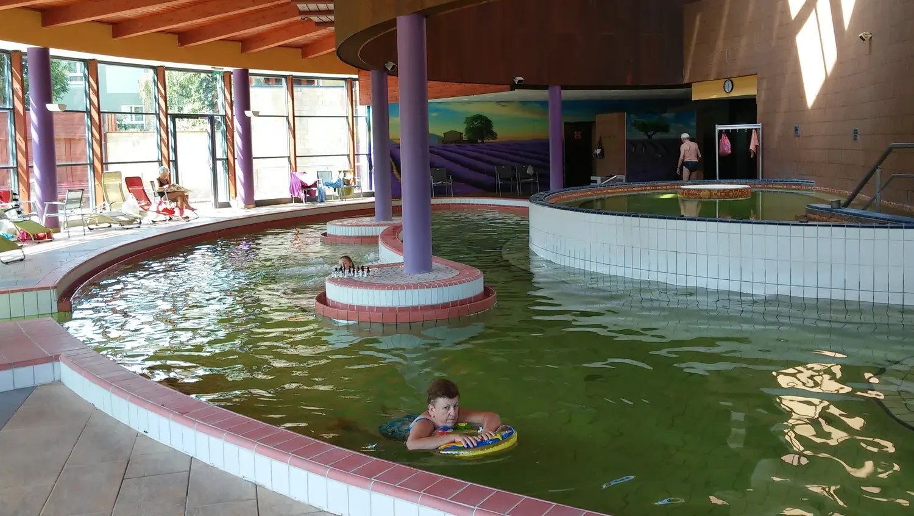
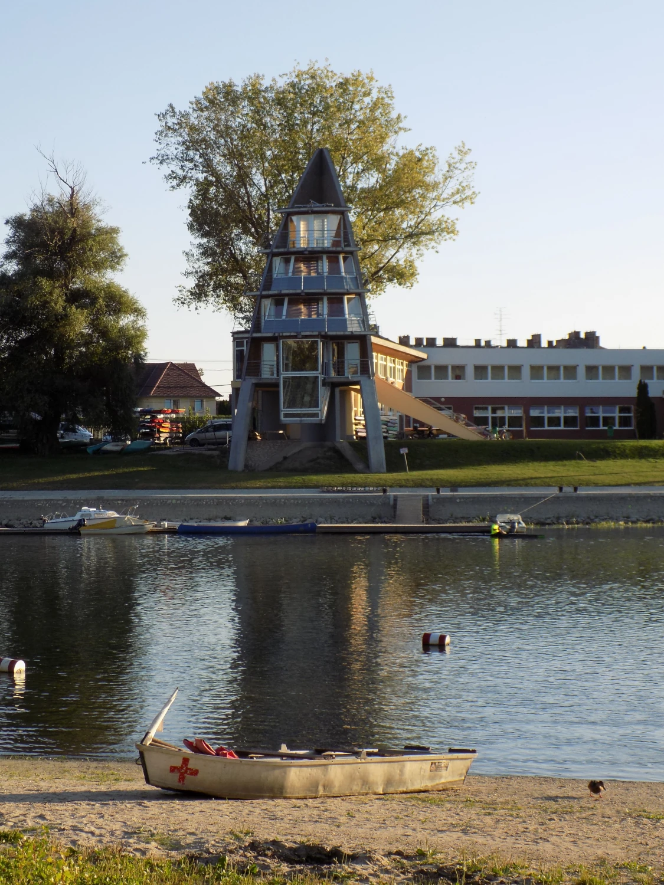
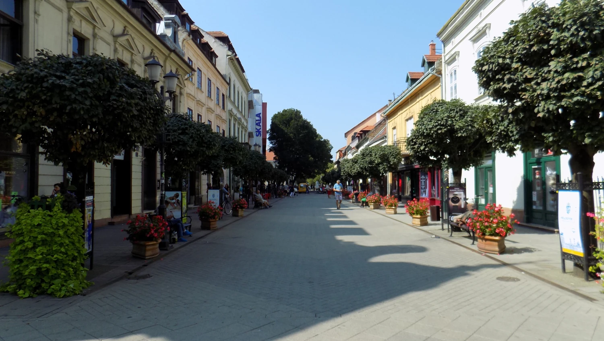
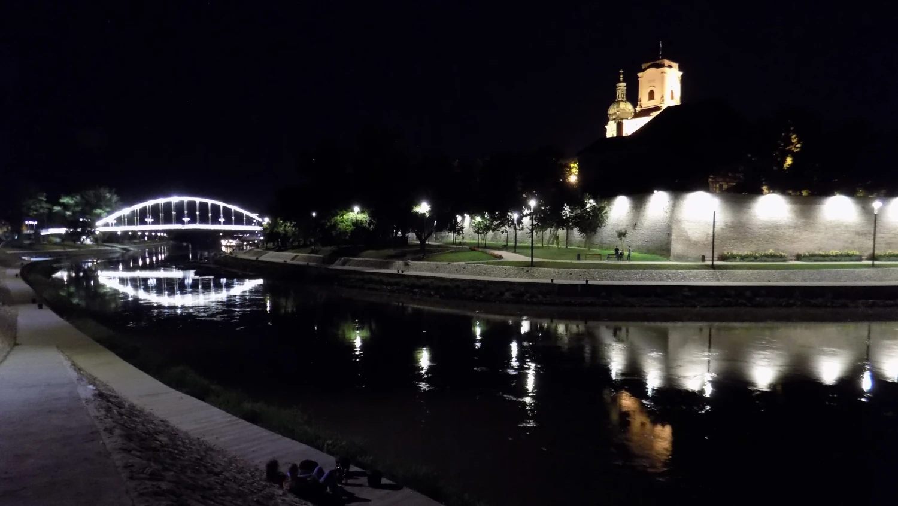
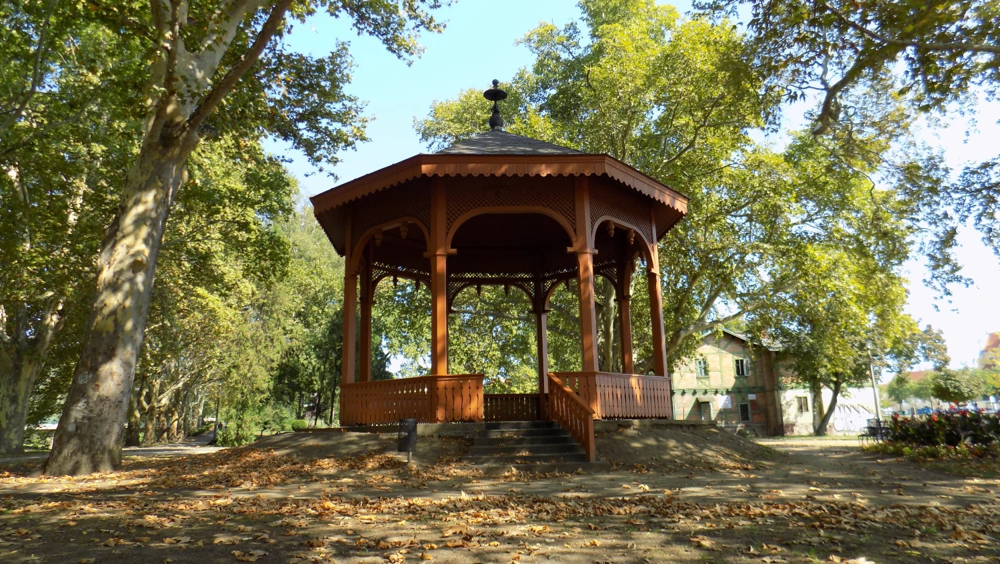
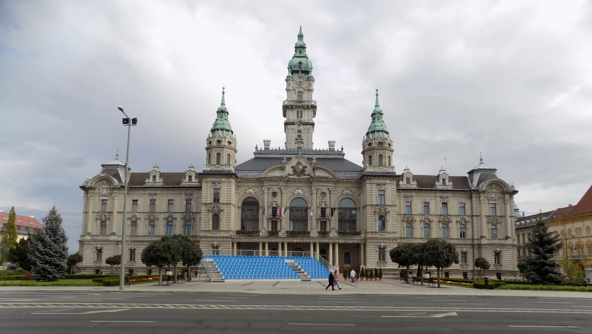

Győr – perla západního Maďarska
Győr

Byla to jedna z mých prvních delších cest autem v roli řidičky s čerstvým řidičákem, takže jsem z toho měla trochu respekt i nadšení zároveň. Chtěly jsme si někam vyrazit odpočinout, ale zase ne úplně přes půl Evropy.
Győr byla jasná volba – lákaly nás termály, ale i samotné město. Našly jsme si útulný apartmán kousek od lázní.
Samotné termály mě ale trochu zklamaly. Spíš než klidné lázně to připomínalo aquapark – děti vám skákaly skoro až po hlavě, i v těch teplých, a plavčíci to nijak zvlášť neřešili.
Přesto to svůj účel splnilo, vypnuly jsme, odpočinuly si a domů jsme se vracely spokojené a plné dojmů.
Město řek, lázní a barokní krásy

Győr je jedno z nejkrásnějších a nejstarších měst Maďarska, ležící na soutoku tří řek – Dunaje, Ráby a Rábcy.
Město je známé svou bohatou barokní architekturou, lázněmi s termální vodou a příjemnou atmosférou historického centra.
Díky poloze mezi Budapeští, Vídní a Bratislavou je Győr důležitým kulturním i dopravním uzlem.
Kromě památek nabízí také moderní lázeňský areál, zelené parky a možnosti pro vodní sporty.
Győr je ideálním místem pro ty, kteří chtějí spojit poznávání historie s relaxací u vody.
👥 Populace
Győr má přibližně 130 tisíc obyvatel a patří mezi největší města Maďarska mimo Budapešť.
Obyvatelstvo je převážně maďarské, ale díky průmyslu a univerzitám tu žije i mnoho cizinců, hlavně ze Slovenska, Rakouska a Ukrajiny.
🛡️ Bezpečnost
Győr je považován za velmi bezpečné město.
Kriminalita je nízká a centrum i okolní čtvrti jsou bezpečné i večer, což z něj dělá příjemné místo pro turisty i rodiny.
🛐 Náboženství
Většina obyvatel se hlásí ke křesťanství, především k římskokatolické církvi.
Město má silnou církevní tradici, což je vidět na množství kostelů, klášterů a sakrálních památek.
🎓 Školství
Győr je důležité univerzitní město.
Sídlí zde Széchenyi István University, která je známá hlavně technickými, ekonomickými a dopravními obory.
💼 Ekonomika a zaměstnanost
Győr je jedním z ekonomicky nejsilnějších měst Maďarska.
Sídlí zde velký automobilový závod Audi, který zaměstnává tisíce lidí a přitahuje zahraniční investory.
🪙 Chudoba
Chudoba je v Győru nižší než v mnoha jiných částech Maďarska.
Díky silné ekonomice má město poměrně vysokou životní úroveň.
👵 Důchody
Maďarské důchody jsou obecně nižší než v Česku, ale život v Győru je levnější než v Budapešti.
Senioři často využívají místní lázně a zdravotní zařízení.
🌱 Ekologie
Město se snaží udržovat hodně zeleně, parků a čistých nábřeží.
Řeky a cyklostezky hrají důležitou roli v rekreaci i kvalitě života.
🥧 Speciální jídla a pití
Typická je maďarská kuchyně – guláš, paprikové omáčky, klobásy a langoše.
V Győru ochutnáš i místní vína a sladké dezerty, například rétes (závin).
🌟 Co určitě nevynechat
Historické centrum s barokními domy, katedrálu a radnici.
Výlet lodí nebo kajakem po řece Rába.
Termální lázně Rába Quelle a procházku podél řeky.
💡 Typy před návštěvou země
Měj připravenou hotovost v maďarských forintech (HUF).
Eura někde vezmou (hlavně v turistických místech), ale kurz bývá nevýhodný.
Vezmi si plavky – lázně jsou velkou součástí místní kultury.
Ochutnej místní kuchyni a vína, jsou levné a velmi kvalitní.
Galerie






